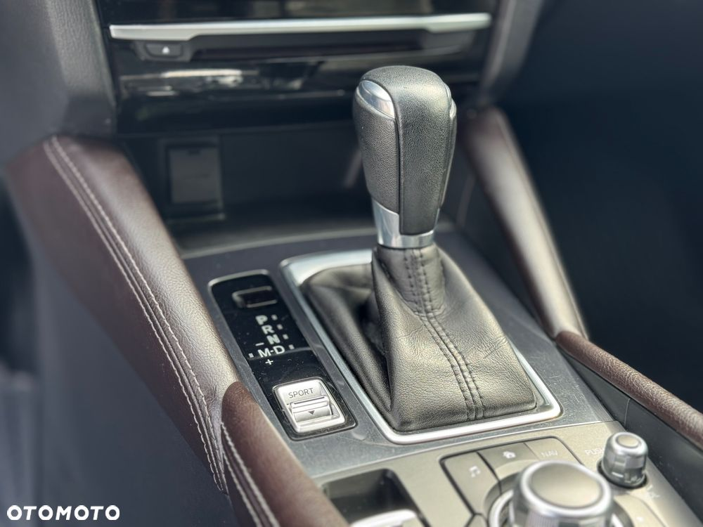
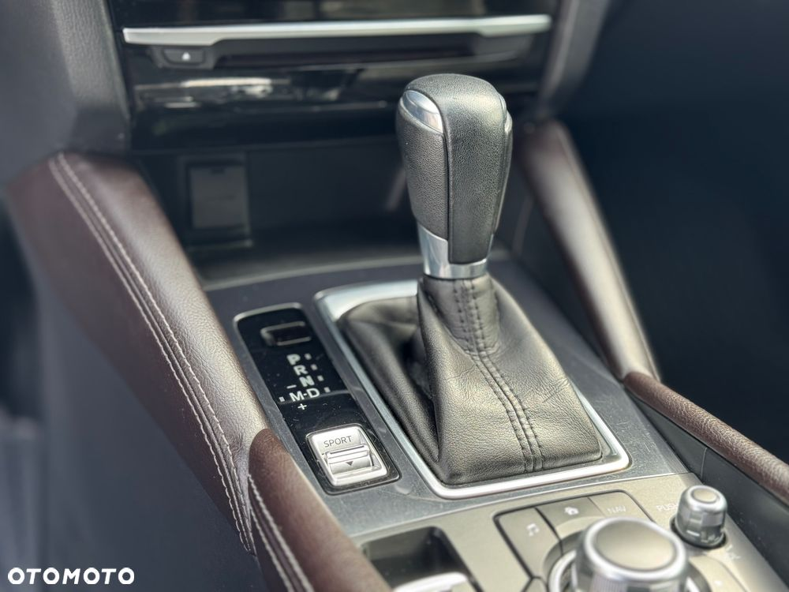

Witam,
Mam do sprzedania mój prywatny samochód, Mazda 6 w najlepszym 2.5 l silniku i automatycznej skrzyni. Samochód pochodzi z Polski, odkupiłem go po po leasingu I kończącej się gwarancji. Samochód był serwisowany w autoryzowanym salonie Mazdy od czasu jego kupna wymieniłem olej w skrzyni ok. 20 tyś temu, wahacze oraz przednią szybę ponieważ miała odprysk.( szkoda naprawiona z autocasco) Auto ubezpieczone w najwyższym pakiecie autocasco więc szyba jest oryginalna, nowa z salonu. Mazda przez pierwsze lata była zabezpieczona powłoką ceramiczną, od czasu mojego kupna została położona folia ppf. Cały front lampy lusterka tylny zderzak. Chromy zostały oklejone na czarny połysk. (Mam zdjęcia przed i po. Samochod jest użytkowany cały czas przez osobę prywatną, niepalącą i starającą się aby samochód prezentował się jak najlepiej pod wzgledem mechanicznym jak i estetycznym. W maździe jest zainstalowany android auto i Apple car. Seryjnie zamontowany przez salon. Posiada łopatki do zmiany biegów oraz tryb sport. Posiada asystenta pasa ruchu, kontrole trzymania kierownicy, ekran head up, aktywny tempomat, podgrzewane przednie i tylne siedzenia. Olej i filtry wymieniane co 10 tys. Niedawno zrobiony serwis olejowy oraz klimatyzacji. Mazda nie posiada korozji, była również impregnowana woskiem(zawieszenie) podczas serwisu w salonie. Samochód jest sprawdzony i nie wymaga żadnego wkładku. Posiadam dodatkowy komplet felg 19 w takim samym wzorze lecz kolor grafit. Opony zimowe są ale uważam że powinny być wymienione dlatego dorzucam je razem z felgami. Auto ma opłacone OC oraz autocasco. Sprzedaje ponieważ z racji zawodu oraz komfortu po chorobie, rozważam kupno CX 5, Kia Sorento i inne . Zamiana z moją dopłata również wchodzi w grę.


 
